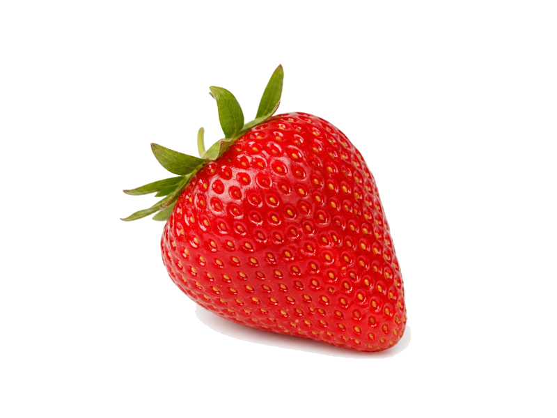

Owoce
Truskawki
Truskawki: 0.7 g białka, 32 kcal, 7.7 g węglowodanów i 0.3 g tłuszczu na 100 g. Kategoria: Owoce.
Kalorie32 kcalna 100 g
Białko / proteiny0.7 g
Węglowodany7.7 g
Tłuszcz0.3 g
Cena (szac.)~1,23 złza 100 g
Ceny zaktualizowano: maj 2026 (szacunek — ceny w popularnych supermarketach)
Porcja: garść (150g)
| Kalorie | 48 kcal |
|---|---|
| Białko | 1 g |
| Węglowodany | 11.6 g |
| Tłuszcz | 0.4 g |
| Cena (szac.) | ~1,85 zł |
Szczegółowe składniki odżywcze na 100 g
| Wartość energetyczna (kalorie) | 32 kcal |
|---|---|
| Białko (proteiny) | 0.7 g |
| Węglowodany | 7.7 g |
| Tłuszcz | 0.3 g |
| Tłuszcze nasycone | 0 g |
| Tłuszcze nienasycone | 0.3 g |
| Witaminy i minerały | Witamina C, Mangan, Potas |
| Współczynnik kcal / 1 g białka | 45.7 |
| Cena produktu (szac. za 100 g) | ~1,23 zł |
| Cena za 100 g białka (szac.) | ~176,19 zł |